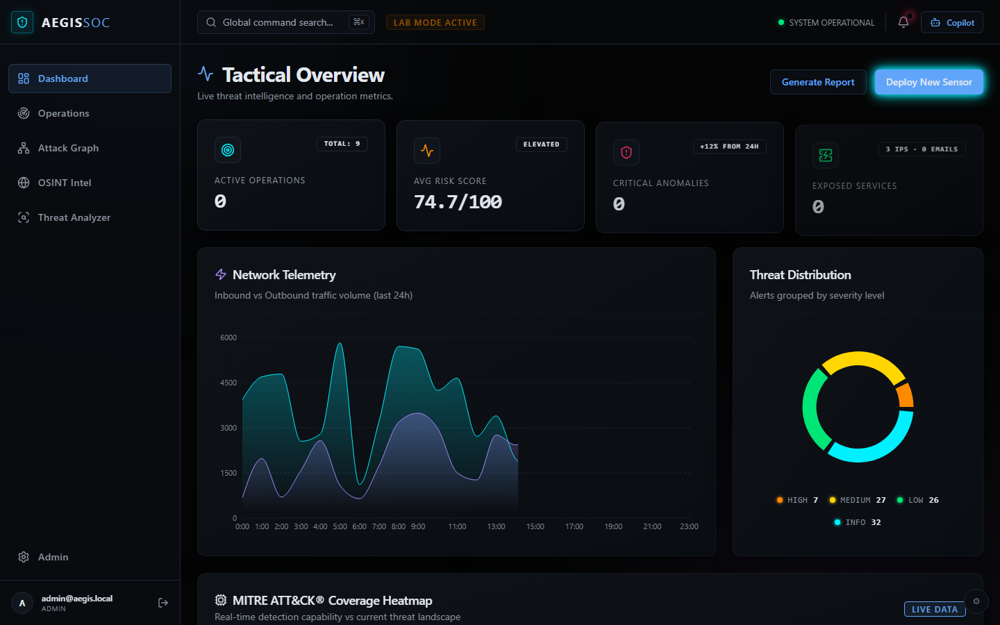
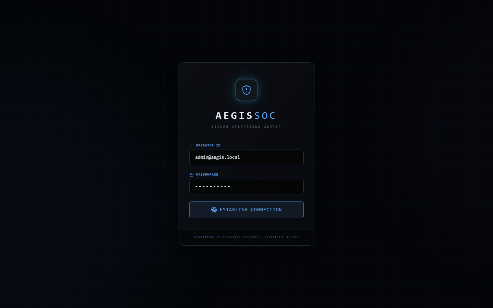
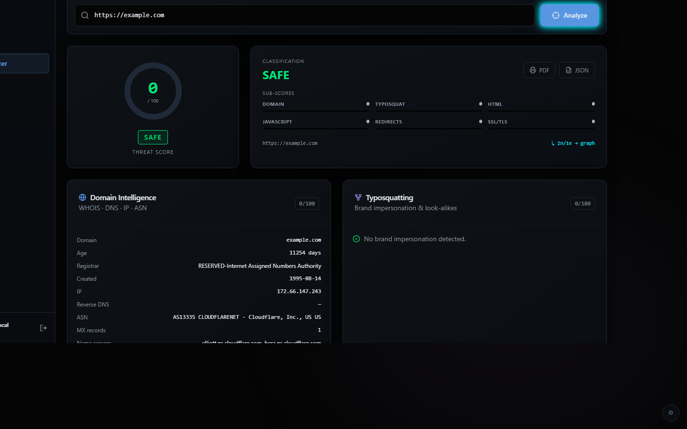
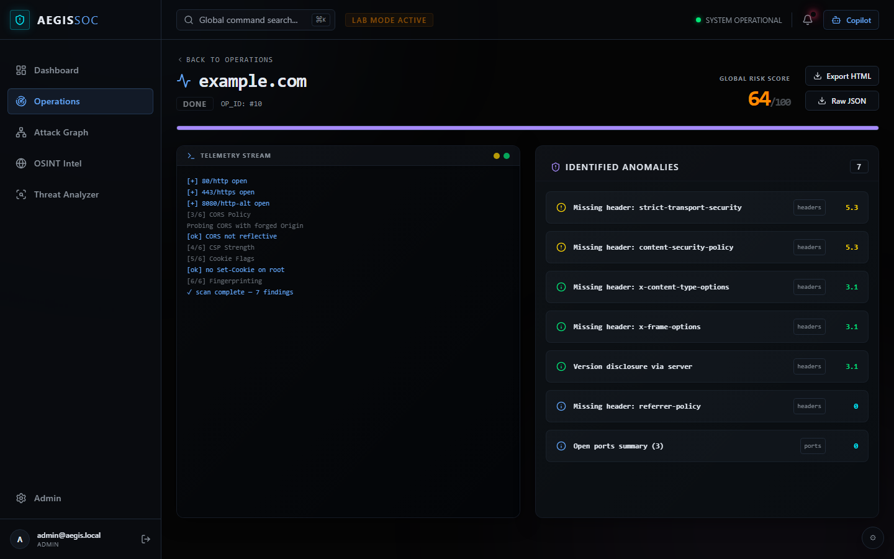
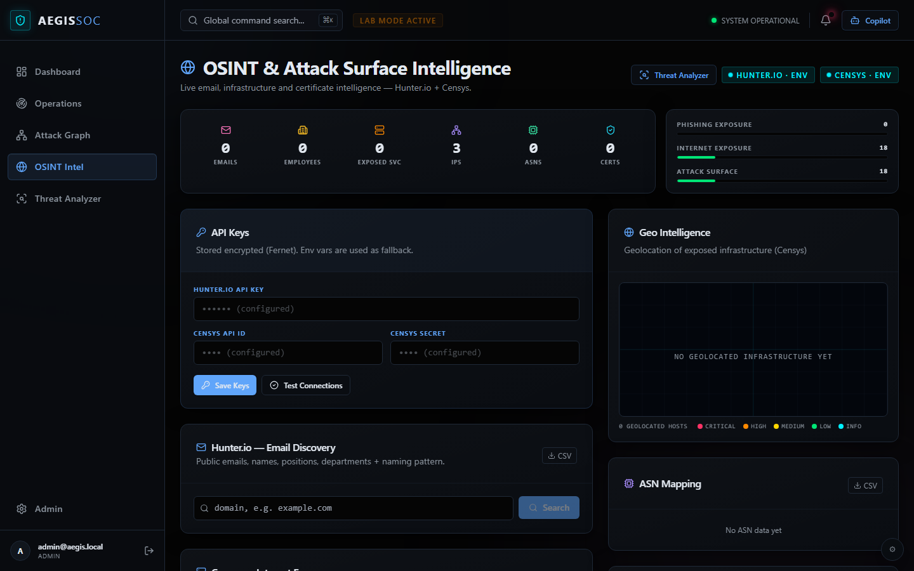
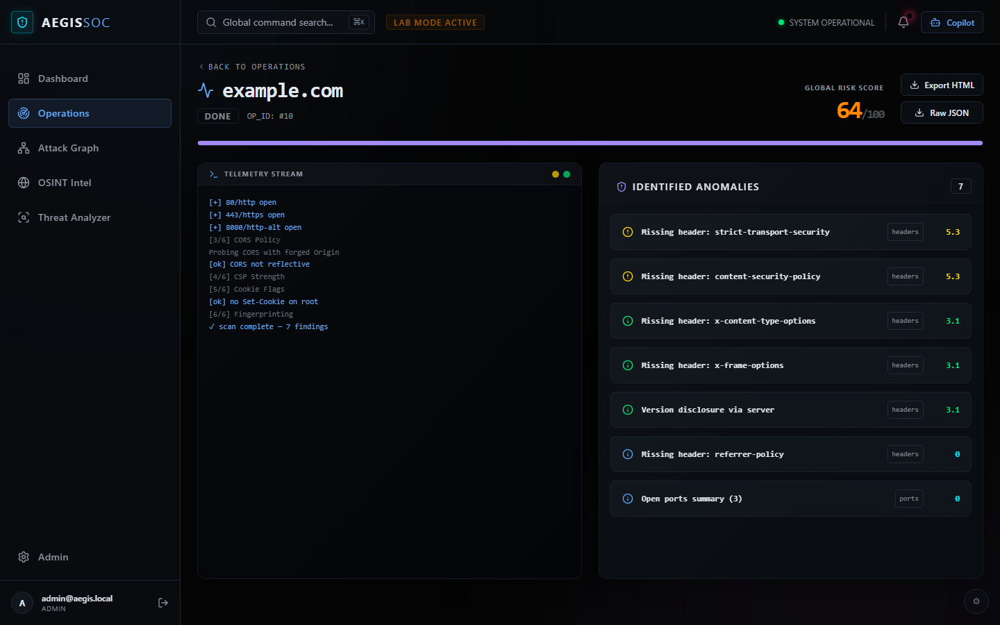
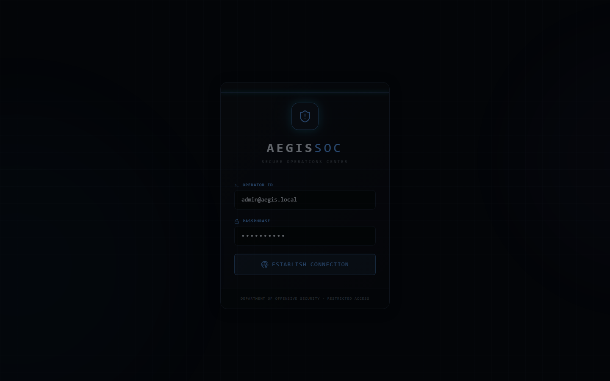
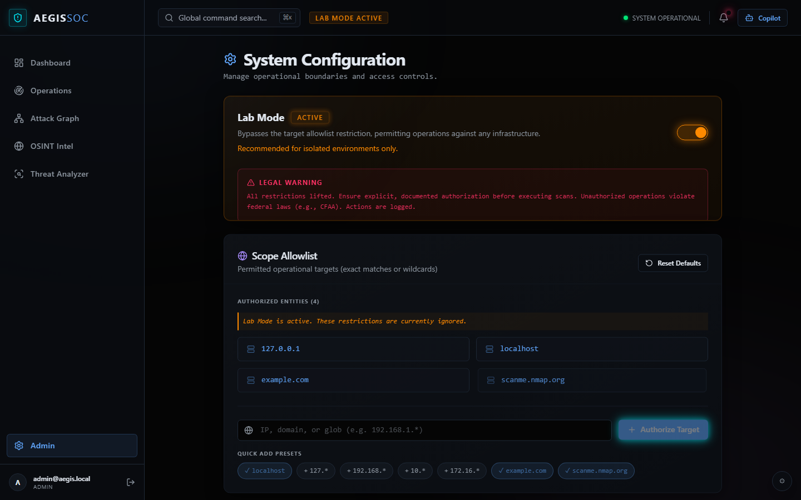

Grafos de ataque en tiempo real, análisis de URLs phishing, inteligencia OSINT y un dashboard estilo SOC que convierte hallazgos dispersos en rutas priorizadas por riesgo.

⚠️ Herramienta defensiva. Solo para sistemas propios o con autorización escrita. Capturas reales sin datos de producción.
Los hallazgos de seguridad llegan dispersos y sin contexto. AegisSOC los unifica en un grafo de ataque con rutas y riesgo, en tiempo real. Detecta phishing y typosquatting antes de que el daño ocurra.
Rutas y riesgo por nodo, visualización interactiva en vivo.
10 etapas: phishing, typosquatting, TLS, redirecciones, IOCs.
Descubrimiento de superficie expuesta desde fuentes públicas.
Tácticas mapeadas automáticamente para priorizar y comunicar.
Hosts, servicios, vulnerabilidades y relaciones, con rutas y puntuación de riesgo. Motor propio sin dependencias externas.
Pipeline de 10 etapas: normalización, WHOIS, typosquatting Levenshtein+homógrafo, TLS DER, cadena de redirecciones, HTML, JS, MITRE, puntuación de riesgo 0–100 e IOCs.
Superficie expuesta: correos, empleados, infraestructura y certificados. Sin clave API para el analizador de URLs.
11 módulos observacionales: headers, SSL, CORS, CSP, secretos, DNS, puertos, fingerprint, cookies, Hunter.io, Censys.
Riesgo, severidad, histórico de escaneos, widgets OSINT y mapa de infraestructura mundial.
Tres roles JWT: administrador, auditor y solo lectura. Claves OSINT cifradas en disco (Fernet + PBKDF2).
Motor propietario de 10 etapas para detectar phishing, typosquatting y URLs maliciosas. No requiere claves de API externas.
| Etapa | Qué analiza |
|---|---|
| 1. Normalizar | Flags estructurales de URL (credenciales, data URIs, parámetros ofuscados) |
| 2. Inteligencia de dominio | WHOIS, DNS, IP, ASN vía Team Cymru |
| 3. Typosquatting | Levenshtein + homógrafo/confusable vs 40+ marcas principales |
| 4. TLS | Validez del certificado, emisor, SANs, edad (parse DER real) |
| 5. Cadena de redirecciones | Seguimiento salto a salto con protección SSRF en cada hop |
| 6. Contenido HTML | Formularios de contraseña, iframes ocultos, meta-refresh |
| 7. Análisis JS | eval/atob/Function constructor, ofuscación, extracción de IOCs |
| 8. Mapa ATT&CK | 10 técnicas MITRE: T1566, T1204, T1583, T1584, T1556, T1111, T1027, T1036, T1656, T1059 |
| 9. Motor de riesgo | Puntuación ponderada 0–100 → Seguro / Bajo / Sospechoso / Alto / Malicioso |
| 10. Extracción de IOCs | IPs, dominios, correos, hashes — integrados en el grafo de ataque en vivo |
Capturas generadas automáticamente desde la aplicación en ejecución · sin datos de producción.







Monitorización continua de la superficie de ataque propia con escaneos programados y alertas en tiempo real.
Evaluar URLs sospechosas recibidas por correo o mensajería antes de que lleguen a los usuarios.
Evaluación observacional de activos con permiso por escrito. Lista de autorización configurable.
Descubrir y priorizar activos expuestos públicamente con visualización geográfica.
Aplicación web en tiempo real con backend de servicios, motor de escaneo extensible, analizador de amenazas propio y visualización de grafos.
Analista (SOC) ↓ Dashboard web (tiempo real) ↓ ↓ Motor de escaneo Analizador URL ↓ ↓ Hallazgos + grafo ← IOCs + ATT&CK
El detalle de implementación, módulos de escaneo e integraciones se mantiene privado de forma intencionada.